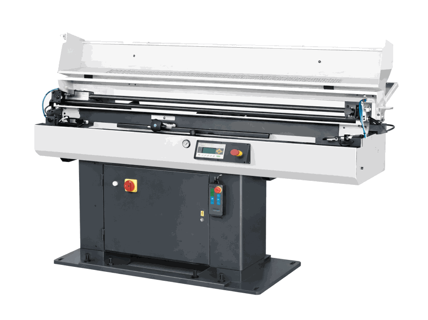

Барфидер Fedek DH65 S2 для токарных станков с ЧПУ
Компактный барфидер для серийной подачи круглого прутка. Помогает увеличить загрузку токарного участка, снизить участие оператора и стабилизировать цикл обработки.
Описание
Компактный барфидер для серийной подачи круглого прутка. Помогает увеличить загрузку токарного участка, снизить участие оператора и стабилизировать цикл обработки.
Механит проверит применимость оборудования к вашей детали, материалу, партии и требуемой точности, подготовит КП и предложит сценарий запуска на площадке.
Характеристики
Комплектация
Гарантия и сервис
Пусконаладка, обучение операторов, первая деталь, сервисное сопровождение и гарантия до 24 месяцев. Условия фиксируются в договоре поставки.
Оплата
Готовим КП с условиями оплаты, сроком резерва, комплектацией и техническим описанием. Возможна поэтапная оплата по согласованному графику.
Доставка
Организуем доставку по России, подготовку к отгрузке, документацию, разгрузку и рекомендации по подготовке площадки.
Лизинг
Подготовим расчет лизинговой программы под бюджет проекта, аванс, срок и требуемый график платежей.